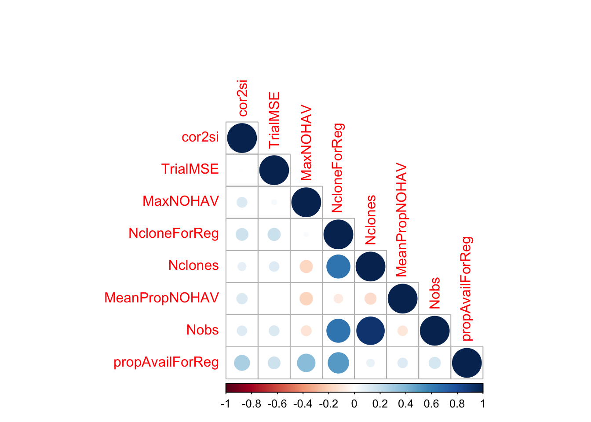

Empirical inputs for simulations - IITA
2021-Aug-13
Last updated: 2021-08-26
Checks: 7 0
Knit directory: IITA_2021GS/
This reproducible R Markdown analysis was created with workflowr (version 1.6.2). The Checks tab describes the reproducibility checks that were applied when the results were created. The Past versions tab lists the development history.
Great! Since the R Markdown file has been committed to the Git repository, you know the exact version of the code that produced these results.
Great job! The global environment was empty. Objects defined in the global environment can affect the analysis in your R Markdown file in unknown ways. For reproduciblity it’s best to always run the code in an empty environment.
The command set.seed(20210504) was run prior to running the code in the R Markdown file. Setting a seed ensures that any results that rely on randomness, e.g. subsampling or permutations, are reproducible.
Great job! Recording the operating system, R version, and package versions is critical for reproducibility.
Nice! There were no cached chunks for this analysis, so you can be confident that you successfully produced the results during this run.
Great job! Using relative paths to the files within your workflowr project makes it easier to run your code on other machines.
Great! You are using Git for version control. Tracking code development and connecting the code version to the results is critical for reproducibility.
The results in this page were generated with repository version c2c7dae. See the Past versions tab to see a history of the changes made to the R Markdown and HTML files.
Note that you need to be careful to ensure that all relevant files for the analysis have been committed to Git prior to generating the results (you can use wflow_publish or wflow_git_commit). workflowr only checks the R Markdown file, but you know if there are other scripts or data files that it depends on. Below is the status of the Git repository when the results were generated:
Ignored files:
Ignored: .DS_Store
Ignored: .Rhistory
Ignored: .Rproj.user/
Ignored: analysis/.DS_Store
Ignored: code/.DS_Store
Ignored: data/.DS_Store
Untracked files:
Untracked: data/DatabaseDownload_2021Aug08/
Untracked: data/DatabaseDownload_2021May04/
Untracked: data/GBSdataMasterList_31818.csv
Untracked: data/IITA_GBStoPhenoMaster_33018.csv
Untracked: data/NRCRI_GBStoPhenoMaster_40318.csv
Untracked: data/PedigreeGeneticGainCycleTime_aafolabi_01122020.xls
Untracked: data/Report-DCas21-6038/
Untracked: data/blups_forGP.rds
Untracked: data/chr1_RefPanelAndGSprogeny_ReadyForGP_72719.fam
Untracked: data/dosages_IITA_2021Aug09.rds
Untracked: data/haps_IITA_2021Aug09.rds
Untracked: data/recombFreqMat_1minus2c_2021Aug02.qs
Untracked: output/
Note that any generated files, e.g. HTML, png, CSS, etc., are not included in this status report because it is ok for generated content to have uncommitted changes.
These are the previous versions of the repository in which changes were made to the R Markdown (analysis/inputsForSimulation.Rmd) and HTML (docs/inputsForSimulation.html) files. If you’ve configured a remote Git repository (see ?wflow_git_remote), click on the hyperlinks in the table below to view the files as they were in that past version.
| File | Version | Author | Date | Message |
|---|---|---|---|---|
| html | 69e816a | wolfemd | 2021-08-19 | Build site. |
| Rmd | 8181653 | wolfemd | 2021-08-19 | Tweak links. |
| html | 19c3a38 | wolfemd | 2021-08-19 | Build site. |
| html | 182b83c | wolfemd | 2021-08-19 | Build site. |
| Rmd | b0425f3 | wolfemd | 2021-08-19 | Integrate and publish results of an analysis to decide on inputs for |
| Rmd | 8a6c166 | wolfemd | 2021-08-11 | Update README clean-up git |
| html | 8a6c166 | wolfemd | 2021-08-11 | Update README clean-up git |
| html | 934141c | wolfemd | 2021-07-14 | Build site. |
| html | 3a1faa0 | wolfemd | 2021-07-14 | Build site. |
| Rmd | 134c8d3 | wolfemd | 2021-07-14 | Publish first pass at GS pipeline-integrated estimation of selection error for input into simulations downstream. |
# 1) start a screen shell
screen; # or screen -r if re-attaching...
# cbsurobbins SLURM
salloc -n 20 --mem=60G --time=06:00:00;
# 2) start the singularity Linux shell inside that
singularity shell ~/rocker2.sif;
# Project directory, so R will use as working dir.
cd /home/mw489/IITA_2021GS/;
# 3) Start R
REstimate selection error
Concept
Determine error-variance vs. plot-size/rep-number scaling for input to simulations.
Our downstream objective is to simulate a baseline and alternative breeding pipelines (variety development pipelines; VDPs) based on proposed differences in plot-size (number of plants), number of reps, locations and overall trial-stage size.
We can’t compute the same selection index for each trial because of variation in the traits scored.
Below, I outline an approach that integrates into the existing GS pipeline and deals with heterogeneity in the traits observed from trial-to-trial.
Approach:
Use the SELECTION INDEX GETGV from genomic prediction using all entire available training population and all of the latest available data as a best estimate of “true” net merit
For each trial, analyze the cleaned plot-basis data:
Fit a univariate mixed-model to each trait scored
Extract trial-specific BLUPs for whatever clones were present
Compute the SELIND for the current trial using BLUPs for whatever component traits were scored (\(SI_{TrialBLUP}\)).
Regress \(SI_{GETGV}\) on the \(SI_{TrialBLUP}\)
Extract the \(\hat{\sigma}^2_e\) of the regression as the trial-specific estimate of the selection error
Using the results from all trials: Regress \(\hat{\sigma}^2_e\) on plot-size. Weight by number of clones available to measure \(\hat{\sigma}^2_e\). Extract coefficients to generate relative scaling profiles of error variances to input for simulating VDPs.
Analysis
library(genomicMateSelectR);
library(tidyverse)
# SELIND GETGVS (for input to estimateSelectionError func below)
gpreds<-readRDS(file = here::here("output","genomicPredictions_full_set_2021Aug09.rds"))
getgvs<-gpreds$gblups[[1]] %>%
filter(predOf=="GETGV") %>%
select(GID,SELIND)
# CLEANED PLOT-LEVEL TRIAL DATA
dbdata<-readRDS(here::here("output","IITA_ExptDesignsDetected_2021Aug08.rds"))
### Restrict consideration to >2012
### to measure the selection error during the current "era" at IITA.
trials2keep<-dbdata %>%
filter(studyYear>=2013) %>%
distinct(studyYear,locationName,studyName,TrialType,CompleteBlocks,IncompleteBlocks,MaxNOHAV) %>%
filter(!is.na(MaxNOHAV)) %$%
unique(studyName)
length(trials2keep) %>% paste0(.," trials")[1] "641 trials"# [1] 641 trials
dbdata %>% filter(studyName %in% trials2keep) %>% nrow %>% paste0(.," plots")[1] "182195 plots"# [1] 182195 plots
trialdata<-dbdata %>%
filter(studyYear>=2013,
studyName %in% trials2keep) %>%
nest(TrialData=-c(studyYear,locationName,studyName,TrialType,CompleteBlocks,IncompleteBlocks,MaxNOHAV))
trialdata %<>%
mutate(propGenotyped=map_dbl(TrialData,
~length(which(!is.na(unique(.$FullSampleName))))/length(unique(.$GID))))
# SELECTION INDEX WEIGHTS
## from IYR+IK
## note that not ALL predicted traits are on index
SIwts<-c(logFYLD=20,
HI=10,
DM=15,
MCMDS=-10,
logRTNO=12,
logDYLD=20,
logTOPYLD=15,
PLTHT=10)
# SOURCE FUNCTION estimateSelectionError()
source(here::here("code","estimateSelectionError.R"))trialdata %>% unnest(TrialData) %>%
summarise(Nplots=nrow(.),
across(c(locationName,studyYear,studyName,TrialType,GID), ~length(unique(.)),.names = "N_{.col}")) %>%
rmarkdown::paged_table()Summary of available plot-level data: See here for details about the cleaned trial data most recently downloaded from IITA/Cassavabase and used below. Number of unique plots, locations, years, etc. in the cleaned plot-basis data.
trialdata %>% unnest(TrialData) %>%
count(TrialType,CompleteBlocks,IncompleteBlocks) %>%
spread(TrialType,n) %>%
rmarkdown::paged_table()Count the trial designs by TrialType:
trialdata %>% unnest(TrialData) %>%
distinct(studyYear,locationName,studyName,TrialType,CompleteBlocks,IncompleteBlocks,MaxNOHAV) %>%
filter(!is.na(MaxNOHAV)) %>%
mutate(TrialType=factor(TrialType,levels=c("CrossingBlock","GeneticGain","CET","ExpCET","PYT","AYT","UYT","NCRP"))) %>%
ggplot(.,aes(x=TrialType,y=MaxNOHAV,fill=TrialType)) +
geom_boxplot(notch = T) +
theme_bw() + theme(axis.text.x = element_text(angle=45,vjust=.5)) +
labs(title = "Max number harvested as a proxy for planned plot size",
subtitle="MaxNOHAV = The maximum number stands harvested per trial. studyYear>=2013")
###### unit test inputs for estimateSelectionError
# TrialData<-trialdata$TrialData[[1]]
# CompleteBlocks<-trialdata$CompleteBlocks[[1]]
# IncompleteBlocks<-trialdata$IncompleteBlocks[[1]]
# TrialData<-trialdata %>% filter(propGenotyped>0.75) %>% slice(4) %$% TrialData[[1]]
# CompleteBlocks<-trialdata %>% filter(propGenotyped>0.75) %>% slice(4) %$% CompleteBlocks[[1]]
# IncompleteBlocks<-trialdata %>% filter(propGenotyped>0.75) %>% slice(4) %$% IncompleteBlocks[[1]]
# ncores=4
# rm(TrialData,CompleteBlocks,IncompleteBlocks)Run function estimateSelectionError() across trials to estimation selection errors.
require(furrr); plan(multisession, workers = 20)
options(future.globals.maxSize=+Inf); options(future.rng.onMisuse="ignore")
trialdata %<>%
mutate(SelectionError=future_pmap(.,estimateSelectionError,
SIwts=SIwts,getgvs=getgvs))
plan(sequential)
saveRDS(trialdata,here::here("output","estimateSelectionError.rds"))Result
Out of 633 trials, 516 produced successful model fits and subsequent estimates of TrialMSE (selection index error).
library(genomicMateSelectR)
estSelError<-readRDS(here::here("output","estimateSelectionError.rds"))
estSelError %<>%
select(-TrialData) %>%
unnest(SelectionError) %>%
select(-SI_BLUPs,-BLUPs,-SelectionError) %>%
filter(!is.na(TrialMSE))Here’s the str() of the estimates I made.
estSelError %>% strtibble [516 × 12] (S3: tbl_df/tbl/data.frame)
$ studyYear : int [1:516] 2013 2013 2013 2013 2013 2013 2013 2013 2013 2013 ...
$ locationName : chr [1:516] "Ibadan" "Ibadan" "Ibadan" "Ibadan" ...
$ studyName : chr [1:516] "13Ayt16ICTIB" "13ayt20pdIB" "13ayt20pdwhtrtIB" "13ayt20pdyrtIB" ...
$ TrialType : chr [1:516] "AYT" "AYT" "AYT" "AYT" ...
$ MaxNOHAV : num [1:516] 10 10 10 10 11 20 10 10 10 10 ...
$ CompleteBlocks : logi [1:516] TRUE TRUE TRUE TRUE TRUE TRUE ...
$ IncompleteBlocks: logi [1:516] FALSE FALSE FALSE FALSE FALSE FALSE ...
$ propGenotyped : num [1:516] 0.983 0.516 0.575 0.75 0.6 ...
$ cor2si : num [1:516] -0.3344 0.2644 0.573 -0.0843 0.5199 ...
$ r2_si : num [1:516] 0.1118 0.0699 0.3284 0.0071 0.2703 ...
$ TrialMSE : num [1:516] 22982 15691 1933 7259 17167 ...
$ NcloneForReg : int [1:516] 30 10 23 25 11 11 11 11 9 28 ...cor2si= correlation between SI computed from each trial’s BLUPs and the SI computed from GETGV (all training data and traits used)r2_si= r-squared, regression of SI_GETGV on SI_TrialBLUPTrialMSE= mean squared error from that regressionNcloneForReg= the number of clones with estimates of both SI_TrialBLUP and SI_GETGV for a given trial. Avoid considering trials with too few data points.
I made two plots below, one of the cor2si and one of the TrialMSE vs. MaxNOHAV (the proxy for plot size). Trial-results are scaled by NcloneForReg and a smooth spline is fit.
estSelError %>%
ggplot(.,aes(x=MaxNOHAV,y=cor2si,color=NcloneForReg,size=NcloneForReg)) +
geom_point() + geom_smooth() + theme_bw() + theme(panel.grid = element_blank()) +
labs(title = "The cor(SI_GETGV,SI_TrialBLUPs) vs. MaxNOHAV as a proxy for plot size")
estSelError %>%
ggplot(.,aes(x=MaxNOHAV,y=TrialMSE,color=NcloneForReg,size=NcloneForReg)) +
geom_point() + geom_smooth() + theme_bw() + theme(panel.grid = element_blank()) +
labs(title = "Trial-specific selection error ests. vs. MaxNOHAV")
| Version | Author | Date |
|---|---|---|
| 182b83c | wolfemd | 2021-08-19 |
In my opinion, there is no clear pattern. I am biased to seeing a hint of a trend.
Look at a correlation matrix and do some regression analysis below.
Try to measure an effect size of increasing the number of stands per plot.
estSelError<-readRDS(here::here("output","estimateSelectionError.rds"))
# extract some covariates which might be predictive of cor2si,
# which I think is on a uniform scale
# Nclone in trial: want est. of plot-size effect NOT dependent on Nclones
# estSelError$TrialData[[1]] %$% length(unique(GID))
# MeanPropNOHAV: measure trial quality by how "full" the plots were at harvest
# estSelError$TrialData[[1]] %$% mean(PropNOHAV)
estSelError %<>%
mutate(Nclones=map_dbl(TrialData,~length(unique(.$GID))),
MeanPropNOHAV=map_dbl(TrialData,~mean(.$PropNOHAV,na.rm=T)),
Nobs=map_dbl(TrialData,~nrow(.)),
TrialDesign=paste0("Complete",CompleteBlocks,"Incomplete",IncompleteBlocks)) %>%
select(-TrialData) %>%
unnest(SelectionError) %>%
select(-SI_BLUPs,-BLUPs,-SelectionError) %>%
filter(!is.na(TrialMSE)) %>%
mutate(propAvailForReg=NcloneForReg/Nclones)
estSelError %>% strtibble [516 × 17] (S3: tbl_df/tbl/data.frame)
$ studyYear : int [1:516] 2013 2013 2013 2013 2013 2013 2013 2013 2013 2013 ...
$ locationName : chr [1:516] "Ibadan" "Ibadan" "Ibadan" "Ibadan" ...
$ studyName : chr [1:516] "13Ayt16ICTIB" "13ayt20pdIB" "13ayt20pdwhtrtIB" "13ayt20pdyrtIB" ...
$ TrialType : chr [1:516] "AYT" "AYT" "AYT" "AYT" ...
$ MaxNOHAV : num [1:516] 10 10 10 10 11 20 10 10 10 10 ...
$ CompleteBlocks : logi [1:516] TRUE TRUE TRUE TRUE TRUE TRUE ...
$ IncompleteBlocks: logi [1:516] FALSE FALSE FALSE FALSE FALSE FALSE ...
$ propGenotyped : num [1:516] 0.983 0.516 0.575 0.75 0.6 ...
$ cor2si : num [1:516] -0.3344 0.2644 0.573 -0.0843 0.5199 ...
$ r2_si : num [1:516] 0.1118 0.0699 0.3284 0.0071 0.2703 ...
$ TrialMSE : num [1:516] 22982 15691 1933 7259 17167 ...
$ NcloneForReg : int [1:516] 30 10 23 25 11 11 11 11 9 28 ...
$ Nclones : num [1:516] 60 31 40 60 30 65 30 30 30 81 ...
$ MeanPropNOHAV : num [1:516] 0.835 0.738 0.773 0.713 0.651 ...
$ Nobs : num [1:516] 240 124 160 240 120 260 120 120 120 275 ...
$ TrialDesign : chr [1:516] "CompleteTRUEIncompleteFALSE" "CompleteTRUEIncompleteFALSE" "CompleteTRUEIncompleteFALSE" "CompleteTRUEIncompleteFALSE" ...
$ propAvailForReg : num [1:516] 0.5 0.323 0.575 0.417 0.367 ...estSelError %>%
select(cor2si,TrialMSE,MaxNOHAV,NcloneForReg,Nclones,MeanPropNOHAV,Nobs,propAvailForReg) %>%
cor(., use='pairwise.complete.obs') %>%
round(.,2) %>%
corrplot::corrplot(type="lower")
| Version | Author | Date |
|---|---|---|
| 182b83c | wolfemd | 2021-08-19 |
MeanPropNOHAV: Avg. proportion of stands harvested per plot. Measure of trial quality / success.NclonesandNobs: Measures of trial sizepropAvailForReg = NcloneForReg/Nclones: a weight for the regressions below. The maximum weight is to be on trials with as many clones as intended scored on the selection index.
Linear model below: include all feasible co-variables and an interaction b/t TrialDesign and MaxNOHAV (plot size)
lm(cor2si~MaxNOHAV+TrialDesign+TrialDesign*MaxNOHAV+studyYear+Nclones+MeanPropNOHAV,
data = estSelError,
weights = propAvailForReg) %>% summary
Call:
lm(formula = cor2si ~ MaxNOHAV + TrialDesign + TrialDesign *
MaxNOHAV + studyYear + Nclones + MeanPropNOHAV, data = estSelError,
weights = propAvailForReg)
Weighted Residuals:
Min 1Q Median 3Q Max
-0.93878 -0.21431 0.01064 0.22382 0.57224
Coefficients:
Estimate Std. Error t value
(Intercept) -5.222e+01 2.674e+01 -1.953
MaxNOHAV 5.222e-03 1.598e-02 0.327
TrialDesignCompleteFALSEIncompleteTRUE -3.082e-02 2.382e-01 -0.129
TrialDesignCompleteTRUEIncompleteFALSE 2.480e-02 2.255e-01 0.110
TrialDesignCompleteTRUEIncompleteTRUE -1.013e-01 2.284e-01 -0.443
studyYear 2.580e-02 1.330e-02 1.940
Nclones 5.049e-04 1.668e-04 3.027
MeanPropNOHAV 3.762e-01 1.515e-01 2.484
MaxNOHAV:TrialDesignCompleteFALSEIncompleteTRUE 5.469e-03 1.913e-02 0.286
MaxNOHAV:TrialDesignCompleteTRUEIncompleteFALSE -7.924e-04 1.676e-02 -0.047
MaxNOHAV:TrialDesignCompleteTRUEIncompleteTRUE 7.955e-03 1.714e-02 0.464
Pr(>|t|)
(Intercept) 0.05134 .
MaxNOHAV 0.74393
TrialDesignCompleteFALSEIncompleteTRUE 0.89711
TrialDesignCompleteTRUEIncompleteFALSE 0.91248
TrialDesignCompleteTRUEIncompleteTRUE 0.65766
studyYear 0.05293 .
Nclones 0.00259 **
MeanPropNOHAV 0.01332 *
MaxNOHAV:TrialDesignCompleteFALSEIncompleteTRUE 0.77513
MaxNOHAV:TrialDesignCompleteTRUEIncompleteFALSE 0.96231
MaxNOHAV:TrialDesignCompleteTRUEIncompleteTRUE 0.64279
---
Signif. codes: 0 '***' 0.001 '**' 0.01 '*' 0.05 '.' 0.1 ' ' 1
Residual standard error: 0.3097 on 501 degrees of freedom
(4 observations deleted due to missingness)
Multiple R-squared: 0.05904, Adjusted R-squared: 0.04026
F-statistic: 3.144 on 10 and 501 DF, p-value: 0.0006501lm(TrialMSE~MaxNOHAV+TrialDesign+TrialDesign*MaxNOHAV+studyYear+Nclones+MeanPropNOHAV,
data = estSelError,
weights = propAvailForReg) %>% summary
Call:
lm(formula = TrialMSE ~ MaxNOHAV + TrialDesign + TrialDesign *
MaxNOHAV + studyYear + Nclones + MeanPropNOHAV, data = estSelError,
weights = propAvailForReg)
Weighted Residuals:
Min 1Q Median 3Q Max
-9940.9 -2731.2 -549.3 2480.9 12845.6
Coefficients:
Estimate Std. Error t value
(Intercept) 914475.297 356860.012 2.563
MaxNOHAV -232.808 213.554 -1.090
TrialDesignCompleteFALSEIncompleteTRUE -5230.826 3182.386 -1.644
TrialDesignCompleteTRUEIncompleteFALSE -7568.083 3012.140 -2.513
TrialDesignCompleteTRUEIncompleteTRUE -2341.172 3041.104 -0.770
studyYear -446.189 177.483 -2.514
Nclones 4.471 2.225 2.010
MeanPropNOHAV 891.391 2023.441 0.441
MaxNOHAV:TrialDesignCompleteFALSEIncompleteTRUE 370.713 255.684 1.450
MaxNOHAV:TrialDesignCompleteTRUEIncompleteFALSE 396.631 223.945 1.771
MaxNOHAV:TrialDesignCompleteTRUEIncompleteTRUE 290.578 228.212 1.273
Pr(>|t|)
(Intercept) 0.0107 *
MaxNOHAV 0.2762
TrialDesignCompleteFALSEIncompleteTRUE 0.1009
TrialDesignCompleteTRUEIncompleteFALSE 0.0123 *
TrialDesignCompleteTRUEIncompleteTRUE 0.4418
studyYear 0.0122 *
Nclones 0.0450 *
MeanPropNOHAV 0.6597
MaxNOHAV:TrialDesignCompleteFALSEIncompleteTRUE 0.1477
MaxNOHAV:TrialDesignCompleteTRUEIncompleteFALSE 0.0771 .
MaxNOHAV:TrialDesignCompleteTRUEIncompleteTRUE 0.2035
---
Signif. codes: 0 '***' 0.001 '**' 0.01 '*' 0.05 '.' 0.1 ' ' 1
Residual standard error: 4139 on 505 degrees of freedom
Multiple R-squared: 0.1047, Adjusted R-squared: 0.08696
F-statistic: 5.905 on 10 and 505 DF, p-value: 1.819e-08<6% variance explained (cor2si) and 10% for TrialMSE.
Next simplify a bit, remove the interactions and TrialDesign effect, but keep the covariates.
Simplify it a bit, e.g.: cor2si~MaxNOHAV+studyYear+Nclones+MeanPropNOHAV
lm_cor2si<-lm(cor2si~MaxNOHAV+studyYear+Nclones+MeanPropNOHAV,
data = estSelError,
weights = propAvailForReg)
lm_cor2si %>% summary
Call:
lm(formula = cor2si ~ MaxNOHAV + studyYear + Nclones + MeanPropNOHAV,
data = estSelError, weights = propAvailForReg)
Weighted Residuals:
Min 1Q Median 3Q Max
-0.95664 -0.21012 0.00948 0.22580 0.58414
Coefficients:
Estimate Std. Error t value Pr(>|t|)
(Intercept) -5.633e+01 2.363e+01 -2.384 0.0175 *
MaxNOHAV 7.920e-03 3.894e-03 2.034 0.0425 *
studyYear 2.782e-02 1.174e-02 2.369 0.0182 *
Nclones 5.196e-04 1.219e-04 4.264 2.39e-05 ***
MeanPropNOHAV 3.718e-01 1.487e-01 2.500 0.0127 *
---
Signif. codes: 0 '***' 0.001 '**' 0.01 '*' 0.05 '.' 0.1 ' ' 1
Residual standard error: 0.3082 on 507 degrees of freedom
(4 observations deleted due to missingness)
Multiple R-squared: 0.05678, Adjusted R-squared: 0.04934
F-statistic: 7.631 on 4 and 507 DF, p-value: 5.642e-06lm(TrialMSE~MaxNOHAV+studyYear+Nclones+MeanPropNOHAV,
data = estSelError,
weights = propAvailForReg) %>% summary
Call:
lm(formula = TrialMSE ~ MaxNOHAV + studyYear + Nclones + MeanPropNOHAV,
data = estSelError, weights = propAvailForReg)
Weighted Residuals:
Min 1Q Median 3Q Max
-9411.3 -2973.2 -403.7 2316.7 13128.4
Coefficients:
Estimate Std. Error t value Pr(>|t|)
(Intercept) 447088.115 324383.326 1.378 0.1687
MaxNOHAV 110.772 53.086 2.087 0.0374 *
studyYear -217.692 161.210 -1.350 0.1775
Nclones 7.450 1.678 4.440 1.1e-05 ***
MeanPropNOHAV 2125.966 2049.063 1.038 0.3000
---
Signif. codes: 0 '***' 0.001 '**' 0.01 '*' 0.05 '.' 0.1 ' ' 1
Residual standard error: 4248 on 511 degrees of freedom
Multiple R-squared: 0.04559, Adjusted R-squared: 0.03812
F-statistic: 6.102 on 4 and 511 DF, p-value: 8.407e-05# VarT=100
# h2=0.2
# VarE=(1-h2)*VarT
# tibble(plotSize=1:50) %>%
# mutate(expCorToSI=lm_cor2si$coefficients[["MaxNOHAV"]]*plotSize,
# sqCorToSI=round(expCorToSI^2,2),
# VarE=VarE*(1-sqCorToSI))Conclusions
The analysis seems far from conclusive. Do we even expect the relation b/t plot-size and error variance to be linearly decreasing?
Certainly this will vary by breeding, location, and much more.
There are also possibly many alternative methods to analyze this problem, and alternative datasets to choose.
NEW APPROACH: While inconclusive, this exercise emphasizes a key concern for conducting simulations that alter the VDP: that the cost-benefit balance could depend on the relative information value/selection accuracy/error variance of different plot sizes and trial configurations. As a result, I propose to simulate a range of error-vs-plot size as part of the baseline simulation of each breeding program. If we observe a shift-point in the cost-benefit analysis we can then work with breeding programs to determine where their data indicate they lie and what changes are subsequently recommended.
sessionInfo()R version 4.1.0 (2021-05-18)
Platform: x86_64-apple-darwin17.0 (64-bit)
Running under: macOS Big Sur 10.16
Matrix products: default
BLAS: /Library/Frameworks/R.framework/Versions/4.1/Resources/lib/libRblas.dylib
LAPACK: /Library/Frameworks/R.framework/Versions/4.1/Resources/lib/libRlapack.dylib
locale:
[1] en_US.UTF-8/en_US.UTF-8/en_US.UTF-8/C/en_US.UTF-8/en_US.UTF-8
attached base packages:
[1] stats graphics grDevices utils datasets methods base
other attached packages:
[1] forcats_0.5.1 stringr_1.4.0 readr_2.0.1
[4] ggplot2_3.3.5 tidyverse_1.3.1 genomicMateSelectR_0.2.0
[7] purrr_0.3.4 tidyr_1.1.3 dplyr_1.0.7
[10] tibble_3.1.3 workflowr_1.6.2
loaded via a namespace (and not attached):
[1] Rcpp_1.0.7 lattice_0.20-44 lubridate_1.7.10 here_1.0.1
[5] assertthat_0.2.1 rprojroot_2.0.2 digest_0.6.27 utf8_1.2.2
[9] R6_2.5.0 cellranger_1.1.0 backports_1.2.1 reprex_2.0.1
[13] evaluate_0.14 highr_0.9 httr_1.4.2 pillar_1.6.2
[17] rlang_0.4.11 readxl_1.3.1 rstudioapi_0.13 whisker_0.4
[21] jquerylib_0.1.4 Matrix_1.3-4 rmarkdown_2.10 splines_4.1.0
[25] labeling_0.4.2 munsell_0.5.0 broom_0.7.9 compiler_4.1.0
[29] httpuv_1.6.1 modelr_0.1.8 xfun_0.25 pkgconfig_2.0.3
[33] mgcv_1.8-36 htmltools_0.5.1.1 tidyselect_1.1.1 fansi_0.5.0
[37] crayon_1.4.1 tzdb_0.1.2 dbplyr_2.1.1 withr_2.4.2
[41] later_1.2.0 grid_4.1.0 nlme_3.1-152 jsonlite_1.7.2
[45] gtable_0.3.0 lifecycle_1.0.0 DBI_1.1.1 git2r_0.28.0
[49] magrittr_2.0.1 scales_1.1.1 cli_3.0.1 stringi_1.7.3
[53] farver_2.1.0 fs_1.5.0 promises_1.2.0.1 xml2_1.3.2
[57] bslib_0.2.5.1 ellipsis_0.3.2 generics_0.1.0 vctrs_0.3.8
[61] tools_4.1.0 glue_1.4.2 hms_1.1.0 yaml_2.2.1
[65] colorspace_2.0-2 corrplot_0.90 rvest_1.0.1 knitr_1.33
[69] haven_2.4.3 sass_0.4.0